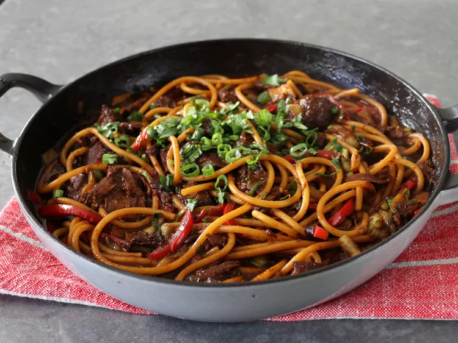

Miso Beef Noodles

Description
I pride myself on my use of leftovers, and I'm constantly trying to impress Michele with my ability to “reimagine” recently made dishes, and some of my best work in that area has featured cut up, already roasted meat, which I've turned into a pasta or noodles. So, that's sort of what I was going for here, except I cooked the beef from scratch, specifically for this.
I'm sure we could get something similar by cutting up the beef first, and then browning it, before making the sauce as shown, but something tells me it wouldn't be quite the same. How? No idea. That's the mysterious nature of food that still excites me, even at this advanced age. That aside, as I said in the video, if you've not yet discovered the magic of miso, this is a great way to get familiar. So, for that reason alone, I really hope you give this a try soon. Enjoy!
Ingredients
- 1/3 cup red miso paste
- 1/4 cup rice vinegar
- 1 teaspoon kosher salt
- 1 cup sliced red bell peppers
Steps:
- Preheat the oven to 350 degrees F (175 degrees C).
- Combine red miso paste, maple syrup, rice vinegar, soy sauce, garlic powder, black pepper, kosher salt, and sriracha in a mixing bowl and whisk until smooth.
- Add beef to the bowl and coat thoroughly on both sides, poking beef all over with a fork to allow the marinade to soak into the meat.
- Add onions and minced garlic to a braising pan, and distribute evenly. Top with beef, and all the sauce mixture. Spread sauce over top of beef, and add 2/3 cup water around the meat.
- Transfer pan to the preheated oven and roast for 1 hour. Remove from oven, flip beef over, and spoon pan drippings over the top. Return to the oven and roast for 1 hour more. Cover pan and continue roasting for 1 more hour.
- Remove from the oven and let cool. Spoon the caramelized onions over the meat. Cover and refrigerate overnight (NOTE: meat can be cut up and the recipe finished as shown without the overnight refrigeration step).
- The next day, cut cold beef into 1/2 inch pieces, and return to the pan. Add 3 cups of water, place over high heat, and bring to a simmer. Simmer, stirring occasionally, until the meat is tender, about 45 minutes.
- Stir bell peppers, green onions, and bok choy into the pan. Raise heat to medium, and cook until vegetables are as tender as desired, 5 to 10 minutes.
- Meanwhile, bring a large pot of lightly salted water to a boil. Cook bucatini in the boiling water, stirring occasionally, until tender yet firm to the bite, 9 to 12 minutes.
- Mix cornstarch and 2 teaspoons of water in a small bowl. Stir into the sauce (only if you like a thicker sauce) and cook for about 1 minutes, while stirring. Transfer cooked noodles to the pan using tongs and toss to combine.
- Serve immediately with cilantro and green onions if desired.